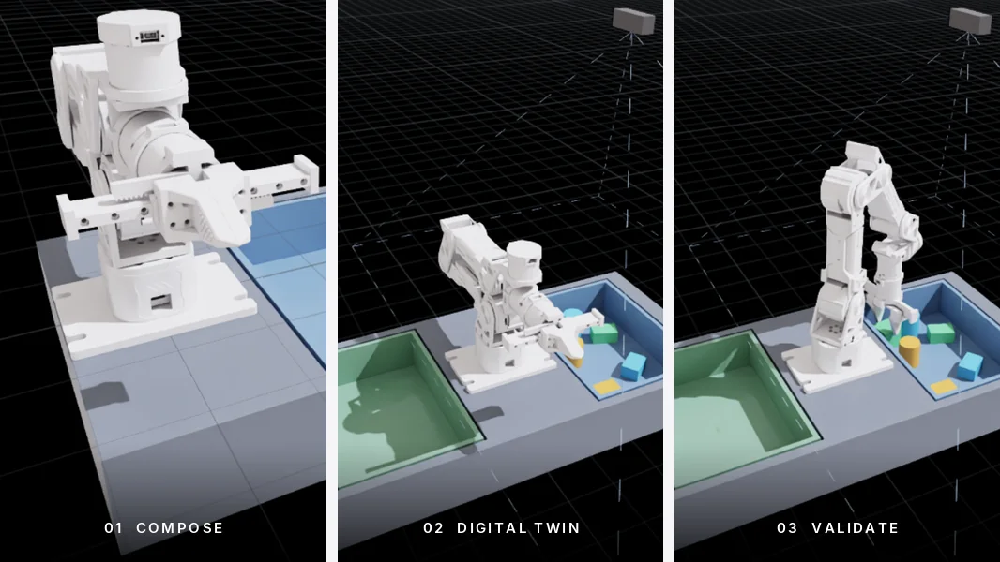
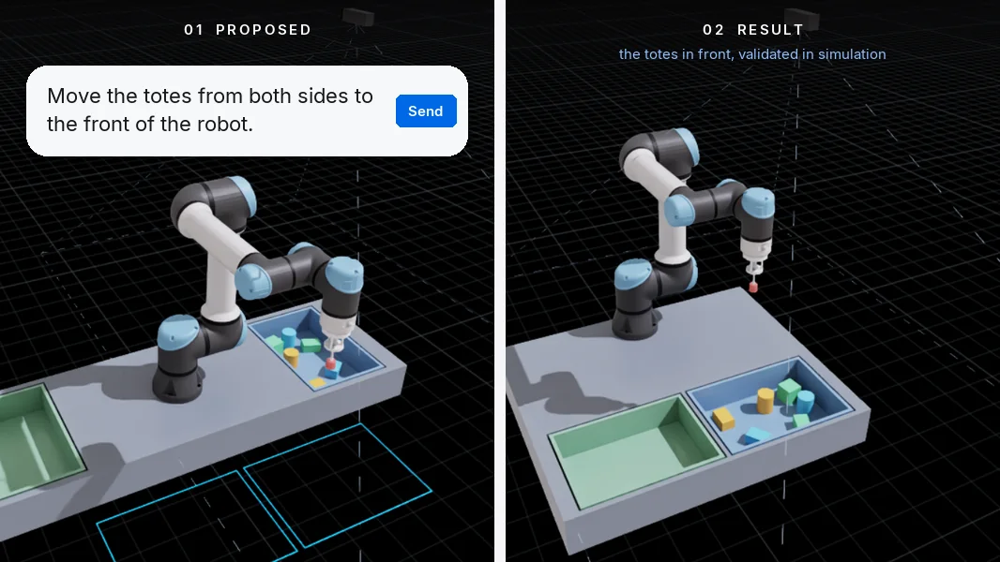
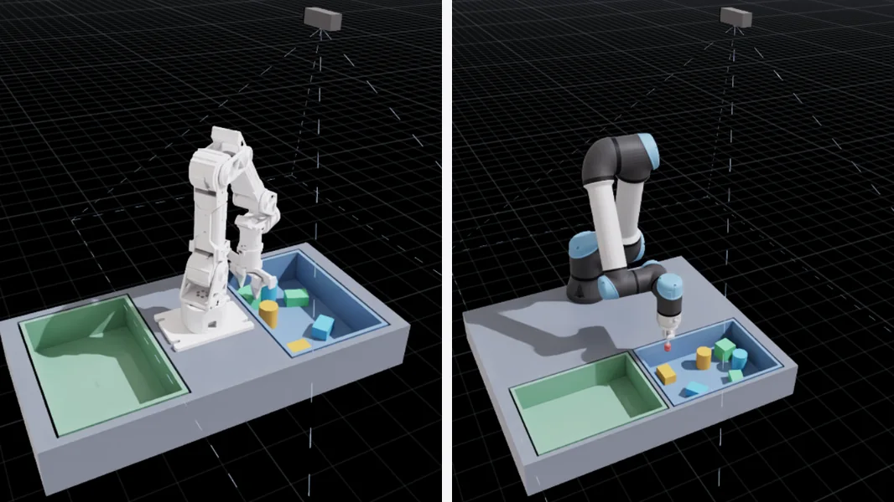
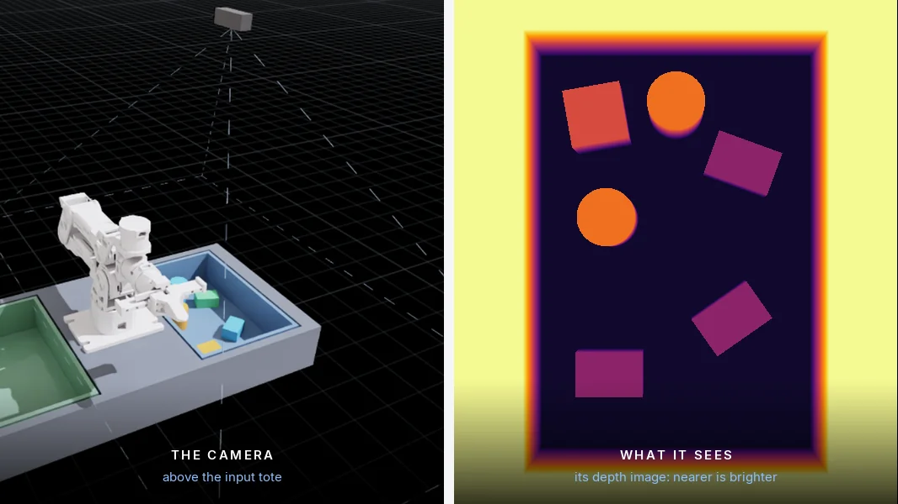

Say what the customer needs
Describe the cell in a sentence: the parts, the totes, the cycle time. Choose the robot, its tool, the camera and the layout yourself, or take Studio's suggestions, step by step.
AI-NATIVE INDUSTRIAL AUTOMATION
SULAND Studio is built to take any robot cell from the customer's request to the running cell: composed with AI, validated in physics simulation, then deployed to real hardware. Today's prototype covers the first part for pick-and-place cells: from the request to a validated concept, in minutes.
For system integrators and automation engineers who design and quote robot cells.
HOW IT WORKS
Designing a robot cell can take weeks of layouts, reach checks, cycle-time estimates and trials before a quote goes out.
SULAND Studio is not a simulator you program by hand: you describe the cell, the AI proposes it, physics checks it.
The first pass takes minutes: compare options before buying any hardware, and quote with confidence, every figure measured in simulation.
Describe the cell in a sentence: the parts, the totes, the cycle time. Choose the robot, its tool, the camera and the layout yourself, or take Studio's suggestions, step by step.
Every proposal is shown first, in words, and a layout change is outlined in 3D. You accept it, change it or turn it down.
The digital twin runs the whole task. Cycle time, parts placed and motion are measured against the requirements.
A proposal for the customer and a list of what the real cell still needs, both written from the validated run.
Coming next: the control software validated on the twin, deployed to the real cell.
SEE IT WORKING
A short look at the SULAND Studio prototype on a first, simple case: a pick-and-place cell described in one sentence, built step by step in 3D, then run in physics simulation and measured against the customer's requirements.
Another robot and another layout each take one more sentence.
Shown live, from the customer's request to the proposal.
Built on NVIDIA Omniverse Kit with PhysX simulation and RTX rendering.
By default the AI model runs on the workstation's own GPU, so your project data stays on the machine.
PLATFORM CAPABILITIES
Every picture below comes from the prototype, running in simulation.

One workspace built for the whole job: describe the cell, build its digital twin, validate it, deploy it.

Say what you need in plain language. A local AI model turns it into concrete changes to the cell: robot, tool, layout, camera, requirements. Each change is checked against the components' limits, such as reach, camera height and field of view. Cloud models, used only on demand, are planned.

Compare robots and layouts on the same task in physics simulation, with cycle time, parts placed and motion measured, before any hardware is chosen.

A simulated camera feeds the robot's perception while the cell is validated. Running the same perception on edge computers, such as NVIDIA Jetson, is on the roadmap.
DEVELOPMENT ROADMAP
The prototype shows the method on a simple pick-and-place cell. The goal is an AI that understands how the components of a robot cell connect. Describe any cell, and SULAND Studio composes it from the robots, tools, sensors, conveyors and controllers it needs, checks every connection and interface, validates it in simulation and deploys it. Milestones may evolve as the product matures.
A cell composed from a sentence and validated in physics simulation: two robots, a gripper and a vacuum tool, a camera and totes. In the prototype today.
More robots and tools, conveyors, feeders and fixtures, controllers and I/O.
The cell's control software on an edge computer such as NVIDIA Jetson, connected to real devices.
Machine tending, palletizing, assembly, inspection: composed, checked, validated and deployed end to end.
ABOUT SULAND
SULAND builds AI-native products for industrial automation and robotics.
SULAND Studio, for robot cells, is the first.
We combine agentic AI, engineering intelligence, robotics and GPU-accelerated computing to make complex industrial workflows faster to design, easier to adopt and ready to scale.
CONNECT WITH SULAND
Interested in SULAND Studio, a demo or technology collaboration? Get in touch.